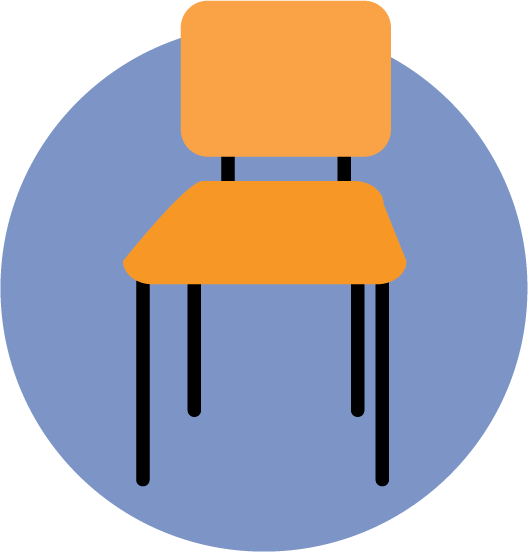
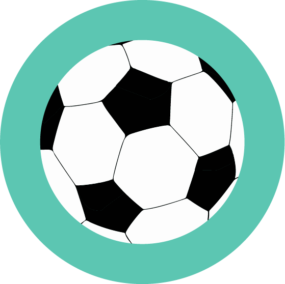
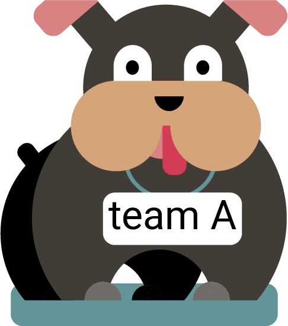
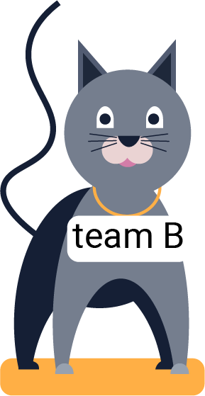

בעיות משמעת
התמודדות עם בעיות משמעת של חניכים
כמעט כל אחד מאתנו נתקל בבעיות משמעת אצל חניכים במהלך פעולה מסיבות שונות: רצון בתשומת לב, פורקן, לחץ חברתי, שעמום, רצון להתבלט ועוד. סיבות אלו נובעות מחוסר בתחושת השייכות של החניכים.
בואו נעודד את תחושת השייכות:
- אחריות- ניתן לחניך אחריות משמעותית בתחום שחשוב לו
- פעילות גיבוש קבוצתית- נעביר פעולה שמטרתה לגבש את הקבוצה, לא נשתמש במשחקים תחרותיים כי זה לא עוזר לגיבוש הקבוצה, כנסו לדף פעולות גיבוש .
- יחס שווה לכולם- נשים לב להתנהגות האישית שלנו ולייחס שניתן לכל חניך
- שיתוף והתייעצות- כאשר אנחנו משתפים בתחושות, רגשות וחוויות אנו יוצרים תחושת קרבה ושייכות
דרכי התמודדות עם הפרעות:
- פנייה לכלל- יש לפנות לכל החניכים ולא אישית לחניך שמפריע, למשל "זה מפריע לי מאוד" במקום "אתה מפריע לי".
- שיחה אישית- אפשר לעשות שיחה עם החניך כדי להבין את הצד השני וללמוד מה הוא מרגיש. נקפיד על פתיחות ורגישות ונשתמש במשפטים כמו "תודה ששיתפת אותי.
דוגמאות מהשטח:
- חניך שם רגליים על הכיסא
-  חניך ששם רגלים על הכיסא יודע שהוא עושה משהו לא בסדר, מעשה זה מעיד על זלזול. במקום לעצור ולהעיר לו, כדאי לעבור לידו במהלך הפעולה ולקחת את הכיסא מבלי לפתוח את זה לדיון.
- חניך משחק עם כדור שהביא מהבית
- נוכל להשאיל את הכדור לצורך הדגמה כלשהי (לדוג', רק מי שאוחז בכדור מדבר בדיון), ולאחר מכן מודים לחניך שהסכים לנו להשתמש בכדור, שמים אותו בצד ומבקשים שייקח אותו בסוף הפעולה. 
- חלוקה לשתי קבוצות
-   במקרה זה יש המון פוליטיקה פנימית וחברויות סגורות, אנחנו רוצים לדלג על כל זה.נחלק אותם על דעת עצמנו לקבוצות או על סמך דברים משותפים כמו: כל מי שיש לו חיית מחמד וכו', בלא נבקש שיתחלקו לבד לקבוצות .